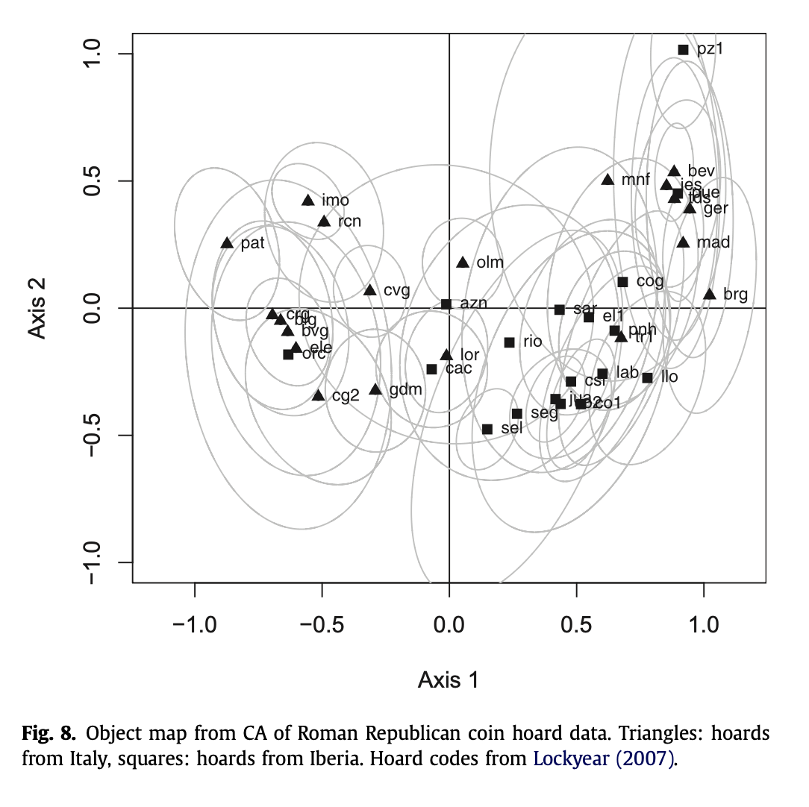
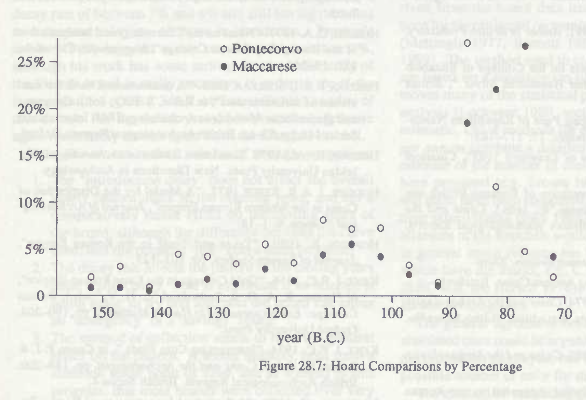
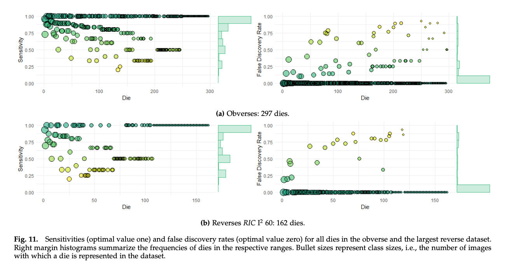
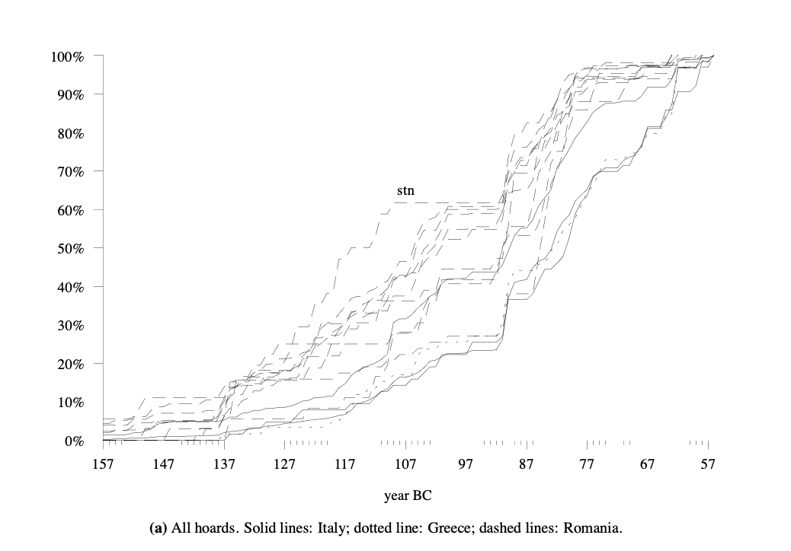
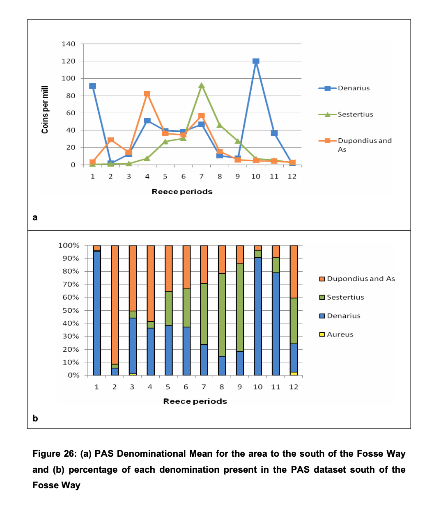
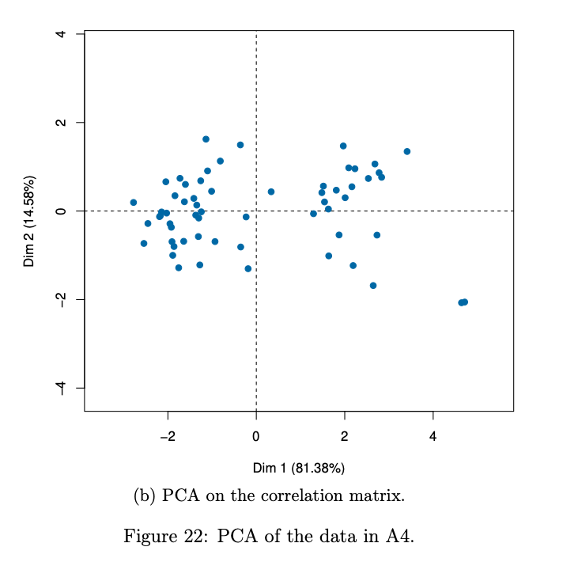
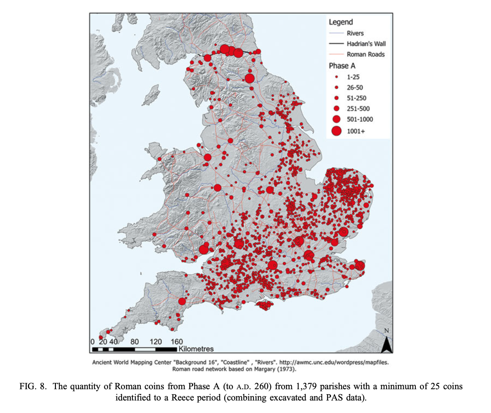

Prepare for Class 01
Prepare your own device
- Computer on either Windows or MacOS operating system (OS). Tablets are not recommended.
- Run the latest update on OS since the computer is your most important companion in this class.
- Install software
Program/text editor at your choice. The following is only recommended but not required:
Visual Studio Code
R (https://cran.r-project.org)
RStudio (https://posit.co/downloads/)
=== R VERSION AND PLATFORM ===
_
platform aarch64-apple-darwin20
arch aarch64
os darwin20
system aarch64, darwin20
status
major 4
minor 5.1
year 2025
month 06
day 13
svn rev 88306
language R
version.string R version 4.5.1 (2025-06-13)
nickname Great Square Root
Team up
Build a team of three members
Read
Wilkinson, Leland. 2005. The Grammar of Graphics. Second edition. Springer
Next week: Murrell, Paul. 2016. R graphics. CRC Press.
Data
Identify a literature of academic topic and collect data (secondary data will work)
I am currently working on analyzing Roman coin hoard data in some novel ways. For the initial analysis, data from the Coin Hoards of the Roman Republic was accessed. This dataset is based of the work of Crawford (1969), as enhanced by Gruber and Lockyear.
First Approach
This first approach to the dataset was gathered by downloading data from the web pages.
First 10 Hoards with Rome as Mint
| 1PO |
Poiana Crăcăoani (Romania) |
https://sws.geonames.org/670093/ |
47.06667 |
26.31667 |
POINT (26.31667 47.06667) |
Rome |
http://nomisma.org/id/rome |
123 |
41.9 |
12.5 |
POINT (12.5 41.9) |
1236.48816 |
| ABE |
Abertura (Spain) |
https://sws.geonames.org/2522486/ |
39.24352 |
-5.81394 |
POINT (-5.81394 39.24352) |
Rome |
http://nomisma.org/id/rome |
23 |
41.9 |
12.5 |
POINT (12.5 41.9) |
1573.37081 |
| ACT |
Áktion (Greece) |
https://sws.geonames.org/265389/ |
38.94019 |
20.76875 |
POINT (20.76875 38.94019) |
Rome |
http://nomisma.org/id/rome |
3 |
41.9 |
12.5 |
POINT (12.5 41.9) |
773.90425 |
| ADJ |
Amărăştii de Jos (Romania) |
https://sws.geonames.org/686386/ |
43.95000 |
24.16667 |
POINT (24.16667 43.95) |
Rome |
http://nomisma.org/id/rome |
4 |
41.9 |
12.5 |
POINT (12.5 41.9) |
977.06559 |
| ADM |
Massa d’Albe (Italy) |
https://sws.geonames.org/3173765/ |
42.10723 |
13.39429 |
POINT (13.39429 42.10723) |
Rome |
http://nomisma.org/id/rome |
93 |
41.9 |
12.5 |
POINT (12.5 41.9) |
77.49022 |
| ADR |
Alcalá del Río (Spain) |
https://sws.geonames.org/2522474/ |
37.51780 |
-5.98185 |
POINT (-5.98185 37.5178) |
Rome |
http://nomisma.org/id/rome |
159 |
41.9 |
12.5 |
POINT (12.5 41.9) |
1652.39657 |
| ADU |
Albanchez de Mágina (Spain) |
https://sws.geonames.org/2522239/ |
37.79263 |
-3.46833 |
POINT (-3.46833 37.79263) |
Rome |
http://nomisma.org/id/rome |
16 |
41.9 |
12.5 |
POINT (12.5 41.9) |
1436.74096 |
| AGG |
Aggius (Italy) |
https://sws.geonames.org/3183443/ |
40.92995 |
9.06517 |
POINT (9.06517 40.92995) |
Rome |
http://nomisma.org/id/rome |
10 |
41.9 |
12.5 |
POINT (12.5 41.9) |
306.37972 |
| AGN |
Agnona (Italy) |
https://sws.geonames.org/6693917/ |
45.72602 |
8.25957 |
POINT (8.25957 45.72602) |
Rome |
http://nomisma.org/id/rome |
244 |
41.9 |
12.5 |
POINT (12.5 41.9) |
545.19648 |
| AID |
Aidóna (Greece) |
https://sws.geonames.org/265542/ |
39.60542 |
21.46797 |
POINT (21.46797 39.60542) |
Rome |
http://nomisma.org/id/rome |
4 |
41.9 |
12.5 |
POINT (12.5 41.9) |
797.75946 |
Second Approach
The second method used the following SPARQL query through the Nomisma SPARQL endpoint. The SPARQL code is can be accessed above.
- Collect charts from studies
Some charts based on the data from the CHRR data.
      
Discussion for next week:
What is the difference between graphics and:
musical notes
Graphics are primarily spatial and visual, representing information through location, shape, color, and other visual relationships. Musical notes, which are visual on paper, are based on auditory waveforms over time. Graphics can be processed visually and interpreted nearly instantly as a whole, while music is interpreted sequentially over time to create meaning.
verbal language
Graphics communicate through direct visual representation and spatial relationships, showing rather than telling. Verbal language uses symbolic abstraction. Arbitrary words and grammatical structures which require learning conventions to decode meaning. Graphics can transcend spoken language barriers and can often convey complex spatial or quantitative relationships more efficiently than words. Verbal language excels at expressing abstract concepts, logical arguments, and narrative sequences that would be difficult to represent visually in graphics.
mathematical notations
Both graphics and mathematical notation may represent quantitative relationships, but they do so differently. Graphics present information through visual metaphors and relationships suah as showing data through bar heights or trend lines. Mathematical notation uses precise symbolic logic with specific meanings to represent these quantitative relationships. A graph might show that one value is much different than another, while mathematical notation can specify exactly how much different. Graphics also can create a more emotional connnection to the information than mathematics, which is one way that graphics can be more manipulative than mathematics. Mathematical notation is also more compact and precise for complex calculations, while graphics make patterns and relationships more immediately apparent to human visual perception.
How many ways messages can be conveyed?
Any way that humans can perceive is a way that we can convey a message. Some are more efficient than others. Some are task-specific. We can categorize these, roughly:
- Visual: text, images, graphics, gestures, facial expressions, sign language, light signals
- Auditory: speech, music, sounds, tones
- Tactile: touch, braille, vibrations, textures
- Olfactory: scents, pheromones (not a concious choice but worth noting)
- Gustatory: taste (very limited uses, though)
Different methods of communication serve different purposes, prioritizing different things such as speed, accuracy, distance, etc.
Bibliography
Crawford, Michael H. 1974. Roman Republican Coinage. 2 vols. Cambridge: Cambridge University Press.